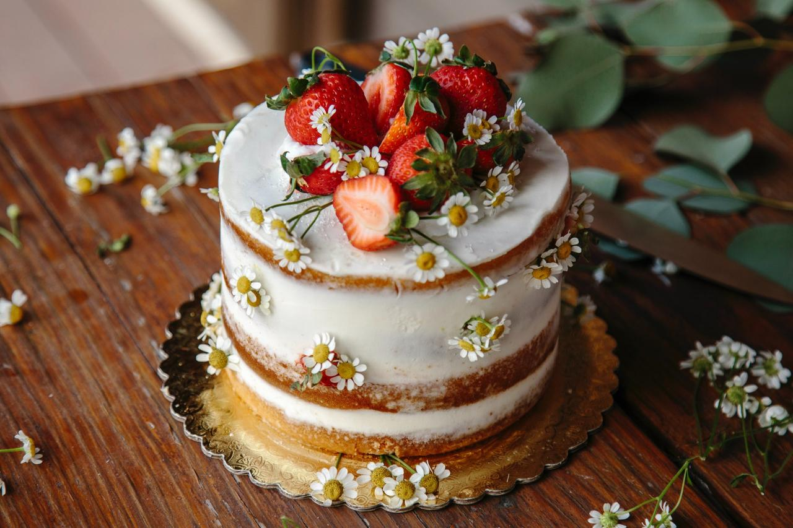
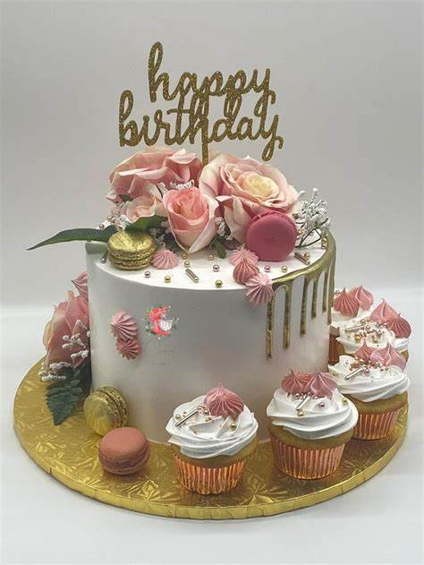

Las últimas tendencias en pastelesPublicado el 23 de Agosto de 2023 por UTPastry Descubre las últimas tendencias en pasteles y tortas que están arrasando en el mundo de la repostería. Desde pasteles decorativos hasta opciones saludables, ¡te lo contamos todo! Leer más |
Consejos para decorar tus propios pastelesPublicado el 12 de septiembre de 2023 por UTPastry 
¿Quieres aprender a decorar pasteles como un profesional? Te compartimos consejos y trucos para que tus pasteles luzcan tan bien como saben. Leer más |
Nuevas recetas de pasteles deliciososPublicado el 16 de septiembre de 2023 por UTPastry Explora nuestras recetas más recientes para pasteles irresistibles. Desde clásicos hasta innovaciones, tenemos algo para todos los amantes de los pasteles. Leer más |